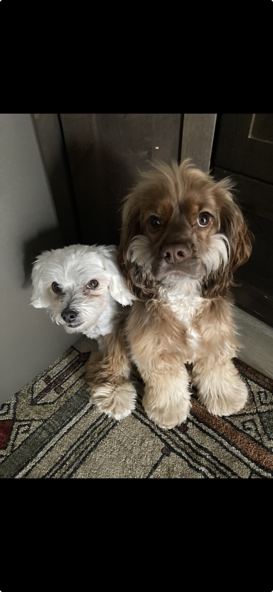

About Oddie
Oddie is a rescued Cocker Spaniel mix who came to Humane Labs Rescue after being found abandoned. She is now healthy, friendly, and waiting for her forever home.

Oddie is a rescued Cocker Spaniel mix who came to Humane Labs Rescue after being found abandoned. She is now healthy, friendly, and waiting for her forever home.
